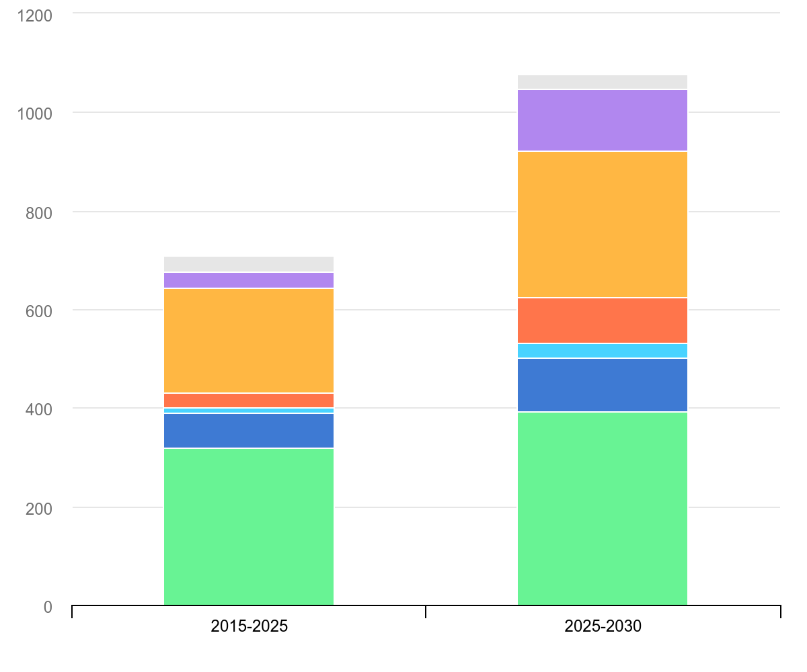
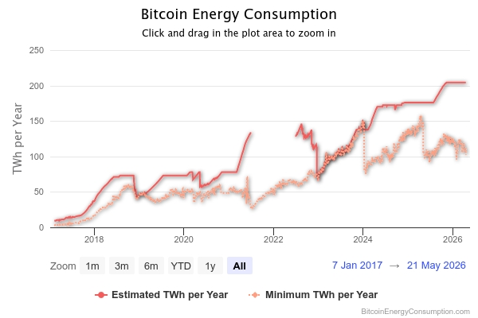

Negative Impacts of Computer Science on Climate Change
Understanding how computing technology contributes to environmental challenges.
1. The Global Energy Surge
The Information and Communications Technology (ICT) sector is a significant driver of global power demand. According to the International Energy Agency (IEA), global electricity demand is projected to grow by 3.5% annually through 2030, with data centers and AI being the primary engines of this increase [1].
Projected Growth
By 2030, the increase in global power consumption will be equivalent to adding two European Unions to the global grid.
Carbon Intensity
Because much of this power is drawn from carbon-emitting sources, the digital economy directly contributes to the global warming cycle.
AI as Energy Driver
Artificial intelligence and data centers are outpacing other industries in energy needs, creating unprecedented demand on power grids worldwide.
Global Electricity Demand Growth

Source: International Energy Agency (IEA). View original source
2. The Cost of Data Centers and AI
Data centers are the physical backbone of the digital world, but their environmental footprint is massive [2].
Infrastructure Scale
Global data center energy use is expected to hit 1,050 TWh by 2026—effectively making data centers the world's 5th largest energy consumer if they were a country.
The AI Tax
A single AI query (like ChatGPT) uses approximately 3 Wh of energy, which is 10 times more than a standard Google search (0.3 Wh) [3][4].
Training Emissions
Training a large language model like GPT-4 required an estimated 1,750 MWh, highlighting the massive "upfront" carbon cost of AI innovation.
AI vs. Search Engine Energy Consumption

Source: ReadySetCompute and Kanoppi research comparisons. View original source
3. Crypto Mining & Hardware Lifecycle
The negative impact of computing starts at the manufacturing plant and ends at the mining rig [5].
Bitcoin Consumption
The Bitcoin network annually consumes 160–204 TWh, surpassing the total electricity usage of countries like Argentina or Thailand.
Manufacturing vs. Use
For a typical smartphone, up to 80% of its lifetime carbon emissions occur during raw material acquisition and production, not during its actual use.
E-Waste Crisis
The demand for high-end GPUs and minerals like lithium for data center batteries is expected to double by 2030, leading to increased mining-related environmental degradation.
Bitcoin Energy Consumption Statistics

Source: Digiconomist Bitcoin Energy Consumption Index. View original source